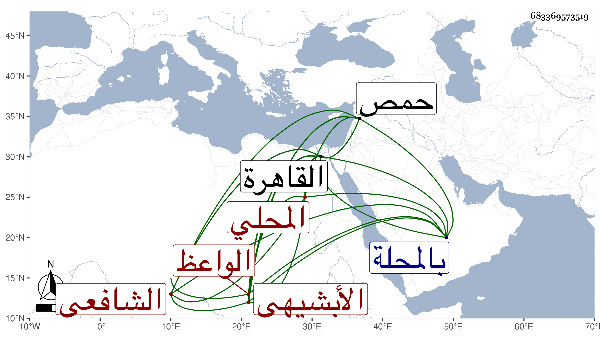

0902Sakhawi.DawLamic.ITO20230111-ara1.EIS1600.683369573519
Biography ID: 683369573519
408
أحمد بن محمد بن علي بن أحمد بن موسى الشهاب بن فتح الدين أبي الفتح الأبشيهي المحلي الشافعي نزيل القاهرة وأخو البدر محمد الآتي وسبط الشهاب ابن العجيمي الماضي الواعظ ويعرف بالأبشيهي . ولد بالمحلة ونشأ بها فحفظ القرآن وكتبا وأخذ ببلده عن يعقوب الرومي في النحو والصرف وعن خاله أوحد الدين في الفقه وقدم القاهرة فقرأ على النظام الحنفي في العربية وعلى التقي الحصني في المعاني والبيان وعلى الجلال المحلي في شرحيه للمنهاج وجمع الجوامع وكذا أخذ عن العلم البلقيني والمناوي وآخرين قليلا منهم الزين زكريا ومما أخذ عنه القطب شرح الشمسية والمختصر للتفتازاني وفي العضد وغير ذلك ويقال أن جل انتفاعه إنما كان به مع مزاحمة صاحبه مع محمد الطنتدائي الضرير ومن شيوخه أيضا السنهوري المالكي وأبو السعادات البلقيني وسمع على أم هاني الهورينية وغيرها وبرع وناب في القضاء وأكثر من التردد للأمير تمراز وخدمته فلما مات البدر بن القطان وكان إذ ذاك رأس نوبة النوب قرره في تدريس الشافعية بالشيخونية وقام الجلال البكري وقعد وأفحش عماد الكردي وأبعد فلم يلتفت الناظر لذلك واستمر خاطر الجلال مغيرا منه بحيث شافهه بالمكروه وقابله هو بنحوه ، ولم يحمد العقلاء ذاك منه وقرأ عليه صغار المشتغلين في التقسيم وغيره سيما بعد استقرار شيخه زكريا في المنصب فإنه صار بيده الوصل والقطع والتقديم والتأخير وعين عليه الأمور المهمة النافعة وأظهر التعفف مع إخبار بعض المعتبرين لي ممن وثق هو به بتعاطيه على يديه وصار بيته مجمعا خصوصا وابن قاسم أحد نواب المالكية جاره وصهره وابن خالته ونقيب الشافعي العلاء المحلي صاحبه وعشيره واستقر في تربة طشتمر حمص أخضر وكذا في تدريس الألجيهية بكلفة لناظرها عقب ابن المرخم ولكن قام عليه الأتابك حمية لولد المتوفى إلى أن أعذر ثم لم يلبث الولد أن رغب عنها لغيره واسترضى هذا بل قرره القاضي في تدريس الحديث بالأشرفية القديمة بعد أبي السعادات البلقيني وفهم عن الشهاب الغضب لذلك فبالغ في قبولي له ورغبته عنه فما سمحت نفسي بذلك ولما قبض على جماعة أستاذه كان هو منهم ثم أطلق دونهم . وبالجملة فكان عاقلا متوددا ولكن كانت نفسه تحدثه بالقضاء الأكبر فعوجل . ومات بعد تعلله في تاسع عشر ذي القعدة سنة اثنتين وتسعين ، ودفن بحوش صوفية ~ سعيد السعداء واستقر بعده في الشيخونية الجلال بن الأمانة وفي الأشرفية ابن القاضي وابن أخي الميت رحمه الله وعفا عنه .
